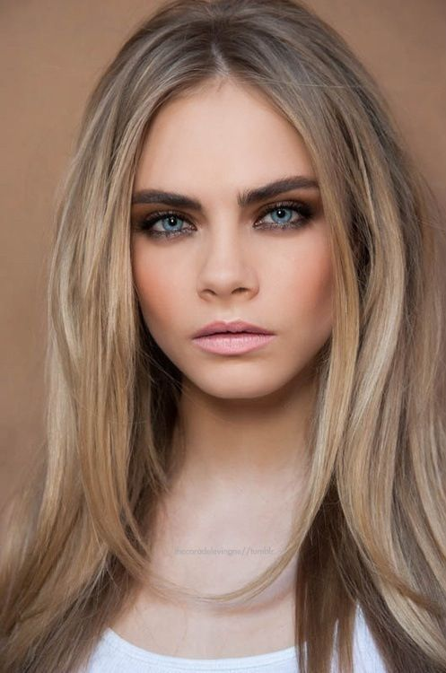

Smokey Eyes
Данный тип макияжа позволяет сделать акцент на глазах. Соответственно, они придает взгляду
сексуальности. Такой тип макияжа вполне может быть выполнен в разных цветах. Не стоит ограничиваться классическими
темными тонами. Все зависит от того, какой у вас цветотип.

Главная характеристика этого макияжа – плавные линии и хорошо растушеванные цвета, которые переходят из более
светлого в темный. Дымчатый эффект прекрасно подходит для вечернего макияжа.
{% endblock %}